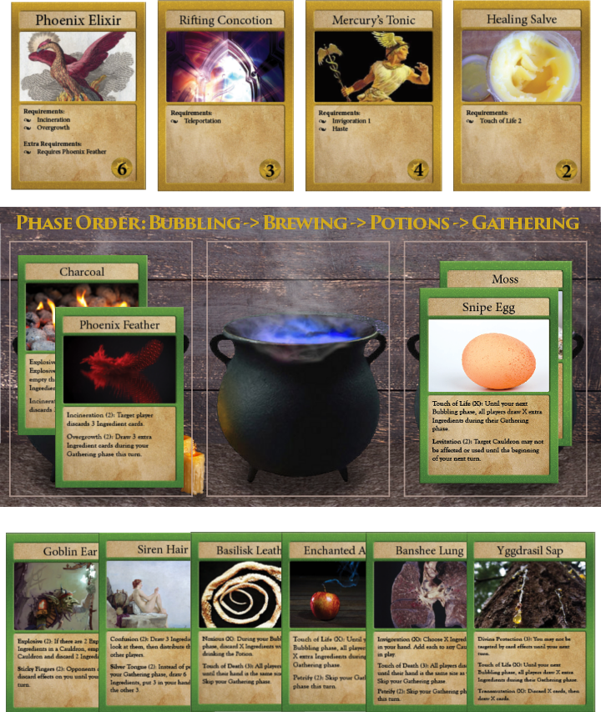
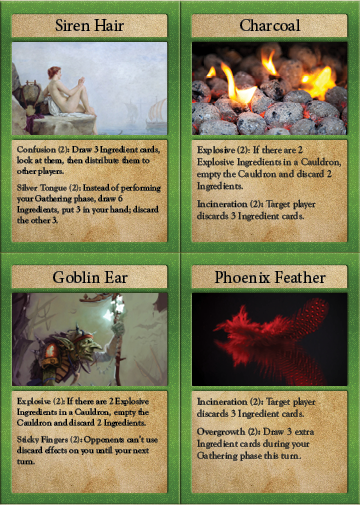
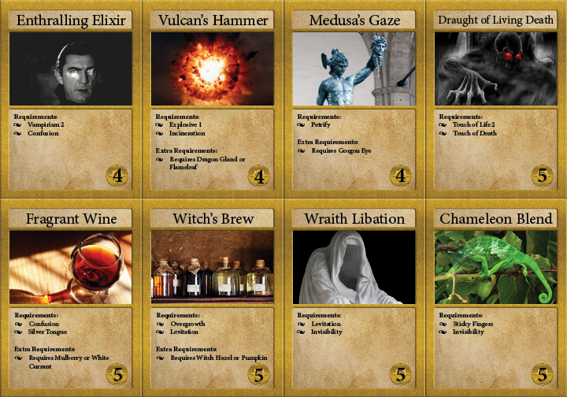
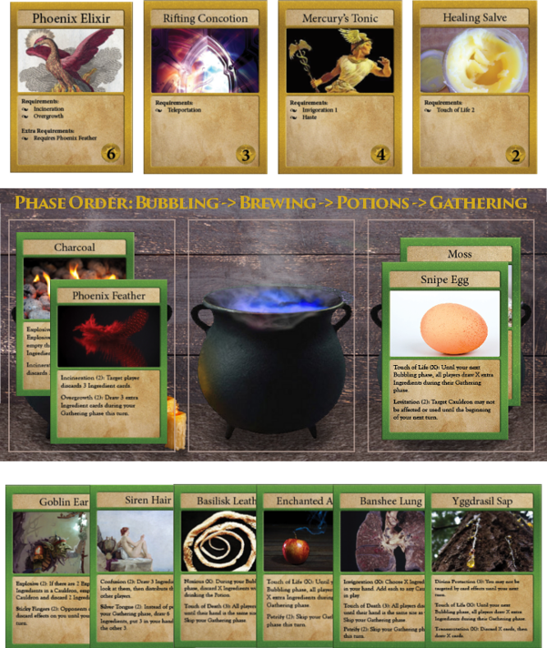
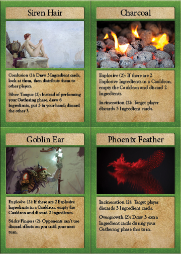
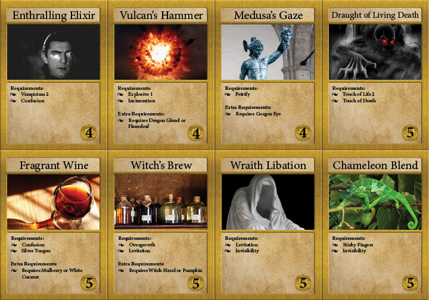
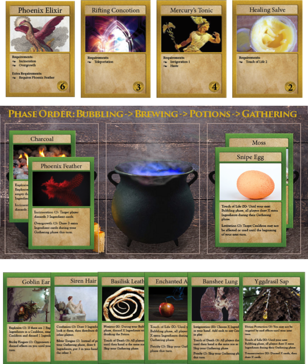
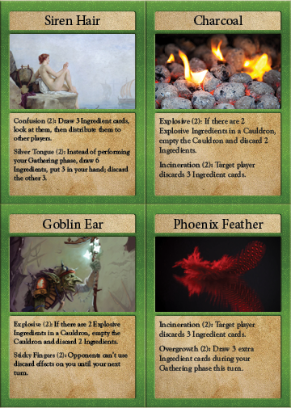
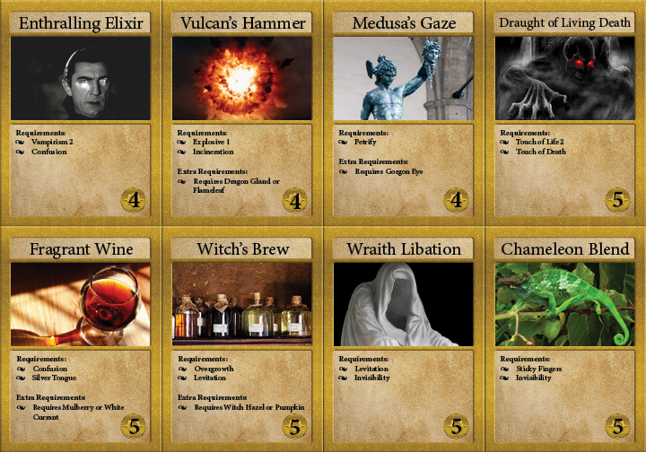
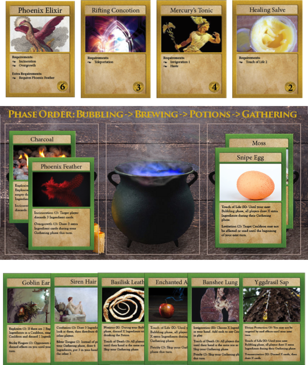
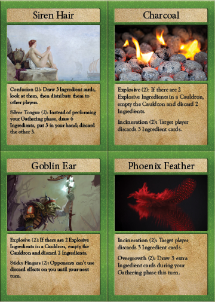
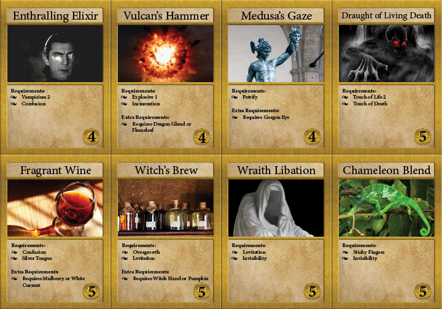
Toil & Trouble is a tabletop card game that was developed as a half-semester project. The gameplay is competitive PvP for 2-4 players. Each player represents an alchemist who owns a potion business competing with the other players. Players draw ingredient cards which have 2-3 effects listed on them, and brew them into potions. When enough ingredients with matching effects are in a potion, it gains that effect. The potion can then be sold if it meets the requirements of an active order card, or can consume them to perform their effects as a form of combat. The first player to reach ten gold wins.
The game was developed in a group of two. I aided in content creation/design, the design and layout of the cards, and did all of the original artwork (card frames, box art, and card mats). I don't particularly love doing art for games, but consider myself decent at it, and I'm very happy with how the art here came out.
A huge aspect of the game is the flavor, because it's very important that you feel like you're handling fantasy ingredients and creating potions from them that make sense. In the end, we received many compliments for how cool the game feels and looks, which I believe means it was fairly successful despite any flaws it has.
As is the nature with class projects, they are not intended to be published, so many of them never see the light of day. This game is actually very close to being completed and publishable however, and is one of the projects I can most easily see going back to if we decided to take it to a further state of being truly "complete". Something about it just feels "right", and I think the playtesters saw that too. The main obstacle is that we're using creative commons art for all of the cards, and some of it is fairly poor. Much of it would need to be replaced, which is a notable undertaking given the amount of a unique cards there are.